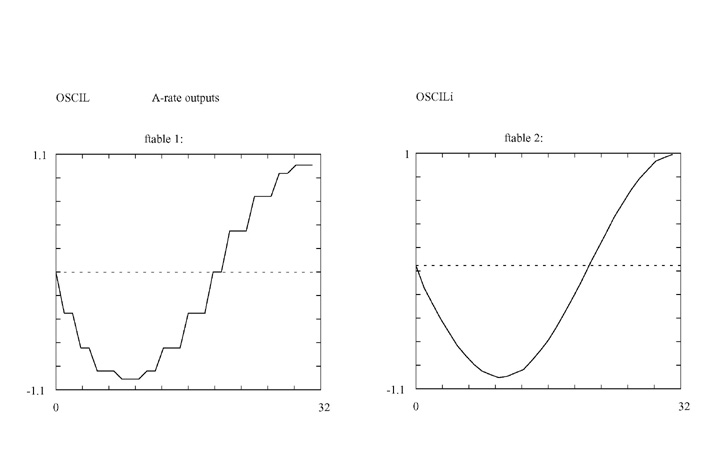
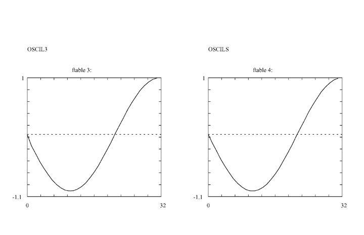
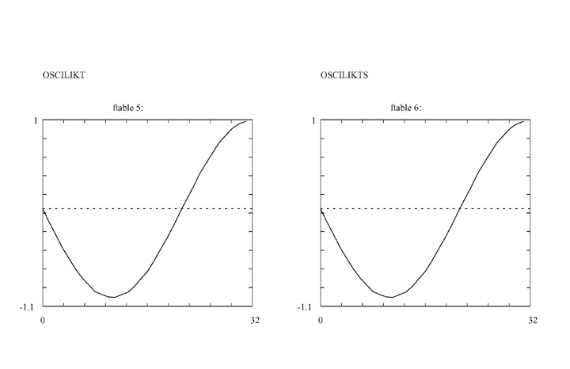
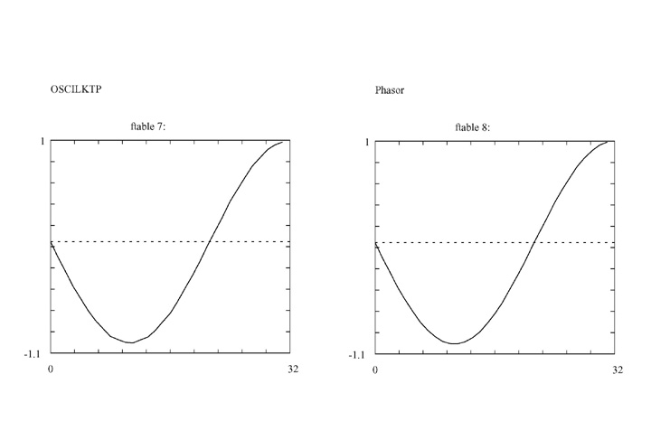
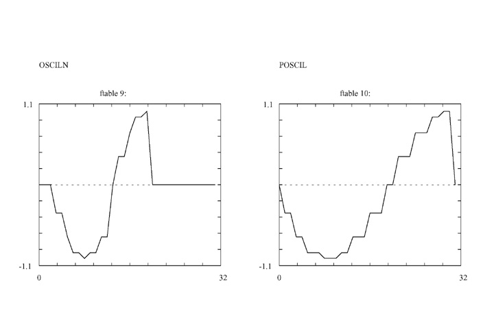
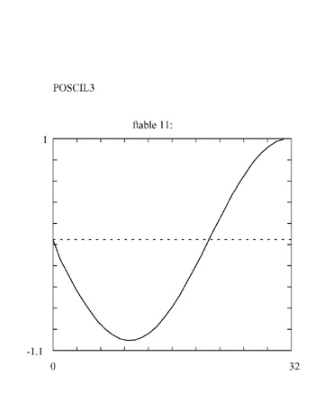
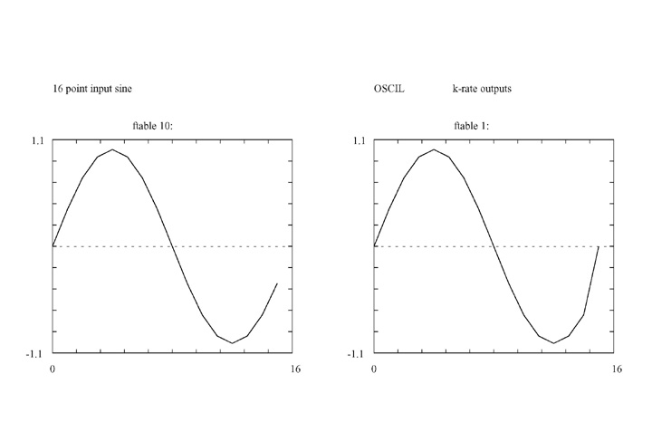
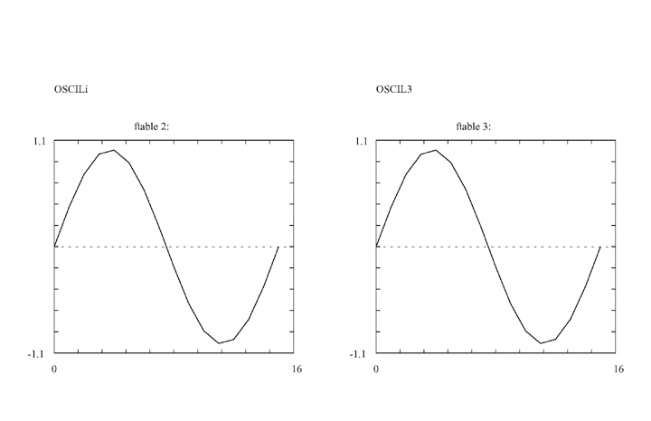
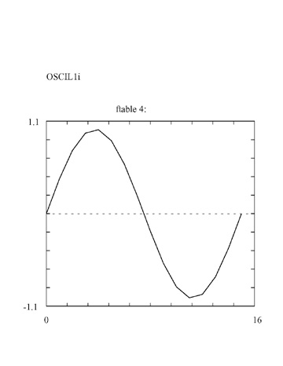

Introduction
There are a large number of oscillator opcodes in Csound. This article takes a brief tour of those oscillators and attempts to demonstrate the various differences, and usefulness between the different types of oscillators. The graphs below are the output of an oscillator at the A- or K- rate, in relation to an input parameter via an f-table. Also a list of the various oscillators is given, as well a brief summary. Finally, if you have been using a particular oscillator consistently, this article might prompt you to experiment with other oscillators in order to obtain better precision or control over interpolation values.
I. A-Rate Output Graphs
For oscillators which have an a-rate output and take an ifn input the following methods were employed:
1.) A 16 point sine table was generated as ifn input using Gen10 and an "f" statement in the score. This was purposely small so that the outputs could be easily compared to the input table.
2.) An empty table was created in the instrument playing the type of oscillator. This table was 512 points long since tablew along with an index over p3 from 0 to 512 was used to "capture" the a-rate output of oscillator over time. Alternatively the "capture" table could be the same as the input table, (16 points) but this is probably not a true picture of the oscillator over time and also makes it harder to see how the oscillator is actually interpolating the input table's values.
3.) The oscillator's parameters used a set amp (10000) and a set frequency (100 cps) so that consistency could be maintained in the output tables. Alternatively the pitch could be swept (20 Hz - 20KHz), but this makes it harder to select a test segment for comparison purposes in the output table. Also there is a general problem with "seeing" the sine shape for low frequencies.
4.) The output was saved to file. Then this file was opened and a segment from the beginning of the table to the max amp point (10000, specified in the oscillators parameters) was cut and saved to a new table.
5.) This new table was compared to other saved tables, as well as the initial 16-point input sine table for differences.
6.) The new table was saved to post script file type using the post script option on Winsound.
A-RATE OSCILLATOR OUTPUT SAVED TO A TABLE
<CsoundSynthesizer> <CsInstruments> sr=44100 kr= 100 ksmps=441 nchnls=1 gitmp ftgen 100, 0, 512, 10, 1 ga1 init 0 instr 1 ga1 oscil 10000, 100, 10 endin instr 2 andx line 0, p3, 512 tablew ga1, andx, 100 endin instr 3 ftsave "testOSCIL.save", 1, 100 endin </CsInstruments> <CsScore> ;16 POINT SINE f10 0 16 10 1 i1 0 5 i2 6 5 i3 12 5 e </CsScore> <CsoundSynthesizer>
EXAMPLE OF 32 POINTS FROM OSCIL OPCODE OUTPUT TABLE-3826.832764
-3826.832764
-7071.066406
-7071.066406
-9238.794922
-9238.794922
-9238.794922
-10000.000000
-10000.000000
-10000.000000
-9238.795898
-9238.795898
-7071.068359
-7071.068359
-7071.068359
-3826.835205
-3826.835205
-3826.835205
-0.000874
-0.000874
3826.833740
3826.833740
3826.833740
7071.066895
7071.066895
7071.066895
9238.794922
9238.794922
10000.000000
10000.000000
10000.000000
     
II. K-rate Output Graphs
1. The opcode "dumpk" was used to send k-rate ouput to file, based on the same 16 point input sine, as above. For the "dumpk" opcode's iprd input parameter, a value of 0 implies one control period.
2. With a SR of 44100 Hz, the Kr was set to 15 since 16 would not work (Csound 4.23).
3. In the .orc file the cps input parameter for the oscillator was set to 1, and in the .sco file the duration, P3, was set to 1 in order to yield a 16 point output.
K-RATE OSCILLATOR OUTPUT SAVED TO A TABLE
<CsoundSynthesizer> <CsInstruments> sr=44100 kr=15 nchnls=1 instr 1 ksig oscil 10000, 1, 10 dumpk ksig, "oscilDump", 8, 0 endin </CsInstruments> <CsScore> ;16 POINT SINE f10 0 16 10 1 i1 0 1 e </CsScore> <CsoundSynthesizer>
EXAMPLE OF 16 POINTS FROM OSCIL OPCODE OUTPUT TABLE at K-Rate0.0000
3826.8345
7071.0679
9238.7959
10000.0000
9238.7949
7071.0669
3826.8337
-0.0009
-3826.8352
-7071.0684
-9238.7959
-10000.0000
-9238.7949
-7071.0664
  
K-rate Outputs
The Control period was evaluated for OSCIL, OSCILI, OSCIL3, and OSCIL1I to see if the results compared favorably with the 16 point input sine. The outputs at the K-rate do not result in significant differences.
Summary
SIMILARITIES-
Most use function table input, and have a k or a rate output variable.
There is usually an input parameter for amplitude and pitch, sometimes phase.
DIFFERENCES- Differences include the use of x,k, and i input rate parameters, whether the oscillator opcode outputs at the a- or k-rate, and the way the opcode renders or interpolates the function table of the input parameter.
SEEING AND HEARING THE DIFFERENCES- For those that use k- or control rate output, dumpk can be used to compare differences in the output of the control rate signal. However some oscillators use i-rate params to set duration or number of passes thru a function table per second in order to simulate pitch, therefore it is best to use a static (one i pass) rather than sweeping pitch (k function) to compare k outputs of those oscillators with all other.
For those that use a or a- or audio rate output, the generating input sine table should be printed and compared with the a-rate variables output of the various a- rate oscillators. The a-rate output from the oscillator can be saved in a table.
A-rate Outputs
Oscil - a-rate output, using a 16 point input sine table. Oscil uses only the input ifn's table points to render results at the amplitude and frequency defined as input parameters at the k-rate.Oscili - a-rate ouput, using a 16 point input sine table. Oscili interpolates the input ifn's table points over the specified amplitude and frequency defined as input parameters at the k-rate.
Oscil3 - a-rate output, using a 16 point input sine table. Oscil3 interpolates using cubic interpolation the input ifn's table points over the specified amplitude and frequency defined as input parameters at the k-rate. It yields the same number of interpolated points as Oscili, but the curve is slightly sharper.
Oscils - a-rate output, but does not use an input table therefore is not a table lookup oscillator? Yet the output compares closely with the interpolating oscillators OSCILI and OSCIL3 above; but shows slight differences in the shape of the curve.
Oscilikt- oscilikt is very similar to oscili, but allows changing the table number at k-rate. It is slightly slower than oscili (especially with high control rate), although also more accurate as it uses a 31-bit phase accumulator, as opposed to the 24-bit one used by oscili.
Oscilikts- oscilikts is the same as oscilikt, except it has a sync input that can be used to re-initialize the oscillator to a k-rate phase value. It is slower than oscilikt and osciliktp.
Osciliktp - allows phase modulation (which is actually implemented as k-rate frequency modulation, by differentiating phase input). The disadvantage is that there is no amplitude control, and frequency can be varied only at the control-rate. This opcode can be faster or slower than oscilikt, depending on the control-rate.
Phasor - There is no lookup table, only a sin function. Yet its output is very smooth and compares as one of the smoothest results.
Osciln - Uses only the input table's 16 point values and provides no interpolation. Accesses table values at a user-defined frequency. This opcode can also be written as oscilx. Osciln will sample several times through the stored table at a rate of ifrq times per second, after which it will output zeros. Generates audio signals only, with output values scaled by kamp. Difficult to control due to itimes parameter. Poorest definition. Questionable frequency accuracy. Better used to scan thru tables than to create pitch.
Poscil - Does not provide interpolation and uses only the input tables's 16 point values. It uses floating-point table indexing, instead of integer math, like oscil and oscili. It is only a bit slower than oscili. Since Csound 4.22, poscil can accept also negative frequency values and use a-rate values both for amplitude and frequency. So both AM and FM are allowed using this opcode. It's output compares with Oscil.
Poscil3 - High Precision Oscillator similar to Oscili. Uses cubic interpolation and provides good results but can be slower than lower precision interpolation opcodes (oscili, oscil3).
III. Conclusion
OSCIL and POSCIL give poorest results because they are non-interpolating opcodes.
They only sample the input table's points. Also OSCILN is non interpolating but
its itimes parameter makes it more useful to scan a table a certain number of
times than to create pitch. The interpolating opcodes (OSCILi, OSCIL3, OSCILIKT,
OSCILIKTS, OSCILIKTP) all compare favorably and the cubic interpolations
provide good results with less work. OSCILIKT, OSCILIKTS, and OSCILIKTP all
provide accessing tables at the k-rate. Differences are OSCILIKTS has a sync
input to reset the phase (arate), and OSCILIKTP has krate phase modulation,
but no amplitude control. OSCILS is a special case where it is not a table
look up oscillator, yet its a-rate output compares favorably with interpolating
opcodes. PHASOR is also not a table look up oscillator, and its results are
very good compared to interpolating opcodes.
Many of the opcodes can accept negative frequency values as input. The High Precision opcodes offer the most number or rate possibilities for input and output. For ex. since Csound 4.22, poscil can accept also negative frequency values and use a-rate values both for amplitude and frequency. The manual has a good examples for OSCILIKT (changing tables at the k-rate) where a k-rate square wave function is created to oscillate between two tables, OSCILIKTS using the a-rate phase change to create a "phasing" effect, and OSCILIKTP where a difference is created between two different a-rate outputs with different phase relationships.
Generating a sine shape at frequencies below @50Hz is difficult at the a-rate. The shape tends towards sawtooth. It seems k-rate is better suited for capturing the output at extremely low frequency. Several approaches were tried at the a-rate:
1.) 1 cps, using 16 pt table (like input table)
2.) 10 cps, using large table which only results in a sawtooth with more definition
3.) using lfo, and phasor at low freqs. Result is still a sawtooth
4.) Tried using the high precision oscillator Poscil which results in a square wave
5.) Used Poscil3 which results in sawtooth
Basic and High Precision Oscillators
oscil -- A simple oscillator.ar oscil xamp, xcps, ifn [, iphs]
kr oscil kamp, kcps, ifn [, iphs]
------
oscili -- A simple oscillator with linear interpolation.
ar oscili xamp, xcps, ifn [, iphs]
kr oscili kamp, kcps, ifn [, iphs]
------
oscil3 -- A simple oscillator with cubic interpolation.
ar oscil3 xamp, xcps, ifn [, iphs]
kr oscil3 kamp, kcps, ifn [, iphs]
-----
oscils -- A simple, fast sine oscillator
ar oscils iamp, icps, iphs [, iflg]
-----
oscilikt -- A linearly interpolated oscillator that allows changing the table number at k-rate.
ar oscilikt xamp, xcps, kfn [, iphs] [, istor]
kr oscilikt kamp, kcps, kfn [, iphs] [, istor]
-----
oscilikts -- A linearly interpolated oscillator with sync status that allows changing the table number at k-rate.
ar oscilikts xamp, xcps, kfn, async, kphs [, istor] -----
osciliktp -- A linearly interpolated oscillator that allows allows phase modulation. ar osciliktp kcps, kfn, kphs [, istor]
-----
osciln -- Accesses table values at a user-defined frequency.
-----
oscilx -- Same as the osciln opcode.
ar osciln kamp, ifrq, ifn, itimes
-----
poscil -- High precision oscillator.
ar poscil aamp, acps, ifn [, iphs]
ar poscil aamp, kcps, ifn [, iphs]
ar poscil kamp, acps, ifn [, iphs]
ar poscil kamp, kcps, ifn [, iphs]
ir poscil kamp, kcps, ifn [, iphs]
kr poscil kamp, kcps, ifn [, iphs]
-----
poscil3 -- High precision oscillator with cubic interpolation.
ar poscil3 kamp, kcps, ifn [, iphs]
kr poscil3 kamp, kcps, ifn [, iphs]
-----
oscil1 -- Accesses table values by incremental sampling.
kr oscil1 idel, kamp, idur, ifn
------
oscil1i -- Accesses table values by incremental sampling with linear interpolation.
kr oscil1i idel, kamp, idur, ifn
Additional Oscillators
Other Opcodes: (lfo, oscbnk, and phasor)------
Direct Table Access [using a Phasor for ex.] ( table, table3, and tablei)
------
FM Synthesis (foscil, and foscili)
------
Additive Synthesis and Resynthesis (hsboscil)
------
Dynamic Spectrum Oscillators(buzz, gbuzz, mpulse, vco, and vco2)
------
Sample Playback(loscil, loscil3, lphasor, lposcil, lposcil3,and waveset)
------
Midi Out (moscil)
------
The phasorbank example from the manual is notable for how to use several phasors at once. The oscillatorbank example is also good for showing how to dynamically create ftables and numbers in the .orc using ftgen.
Acknowledgements
Barry Vercoe et Al. 2005. The Csound Reference Manualhttp://www.csounds.com/manual/html/index.html
Dattorro, Jon. "Effect Design, Part 3 Oscillators: Sinusoidal and Pseudonoise",
Journal of the Audio Engineering Society. 2002 March, Vol 50 Number 3.